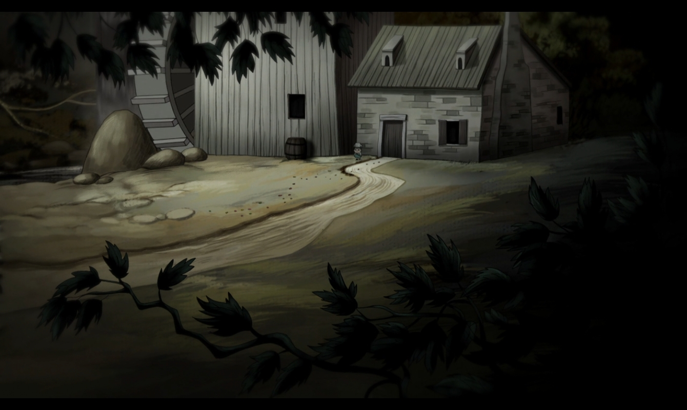
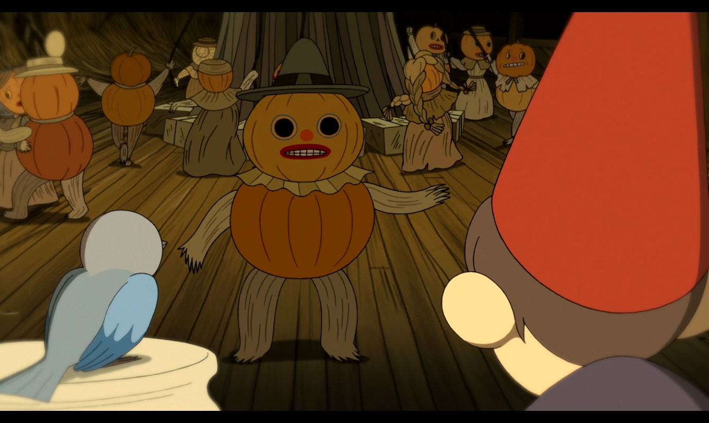
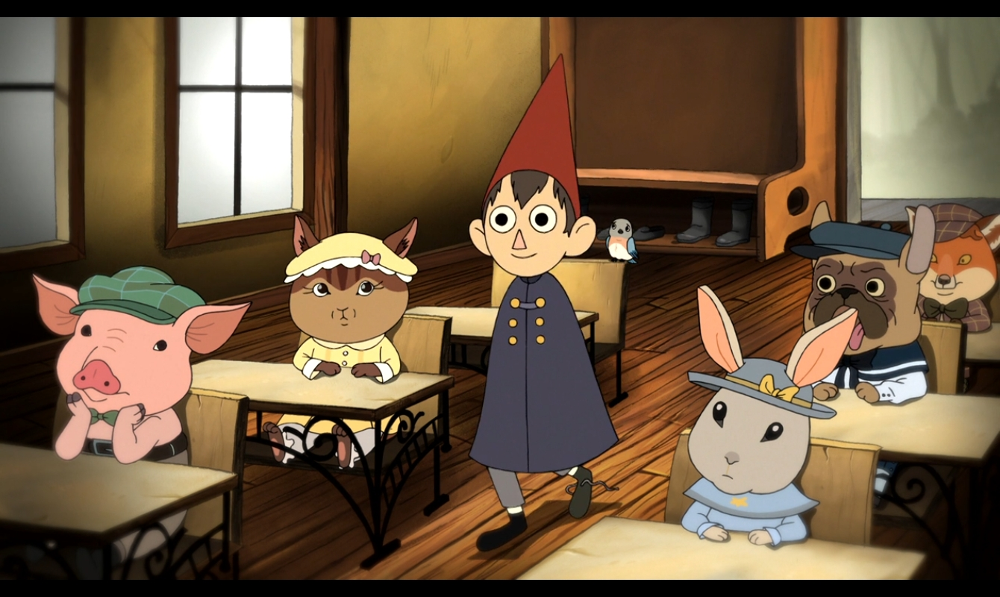
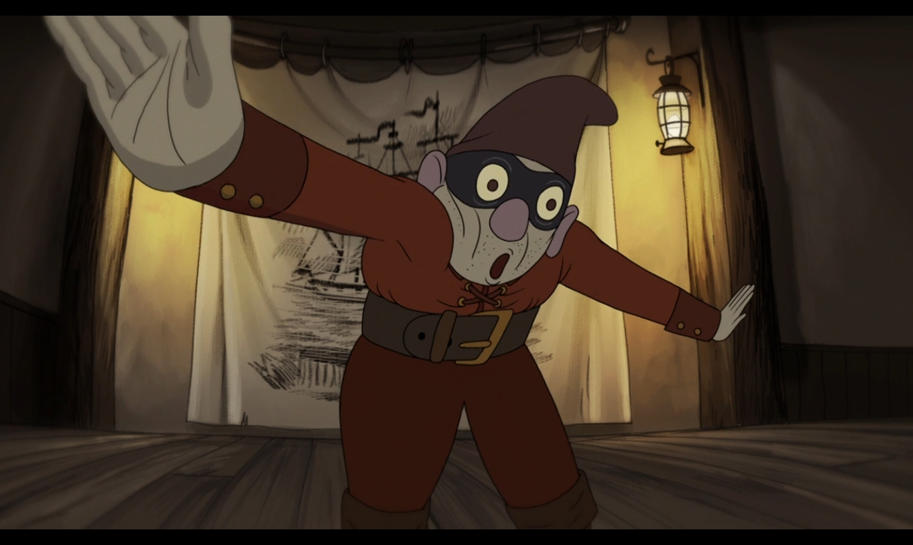
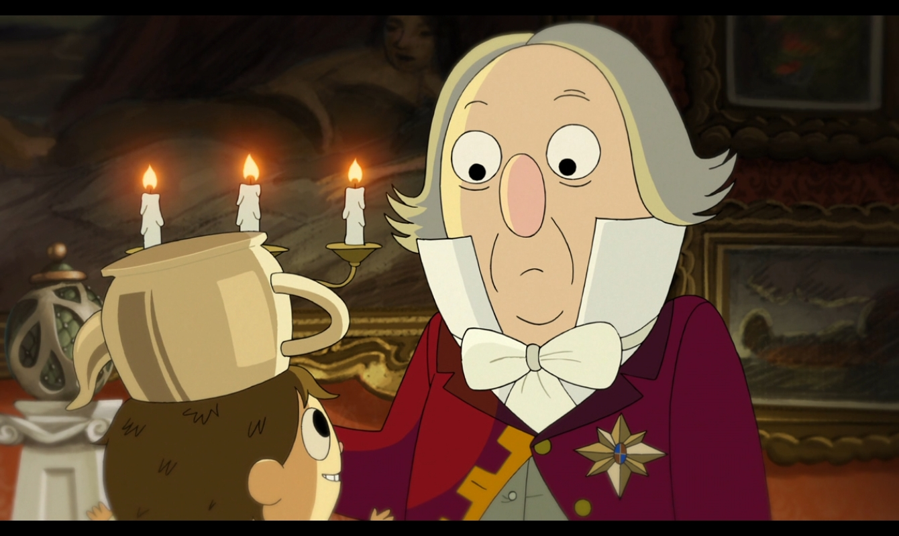
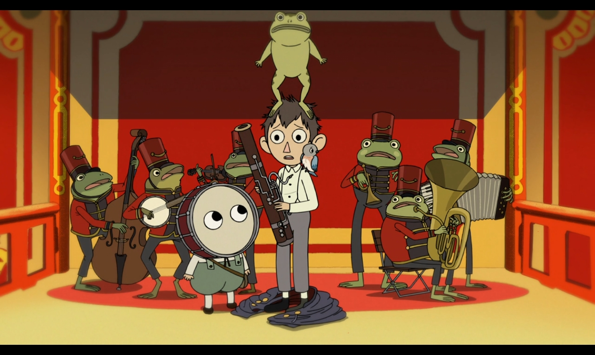
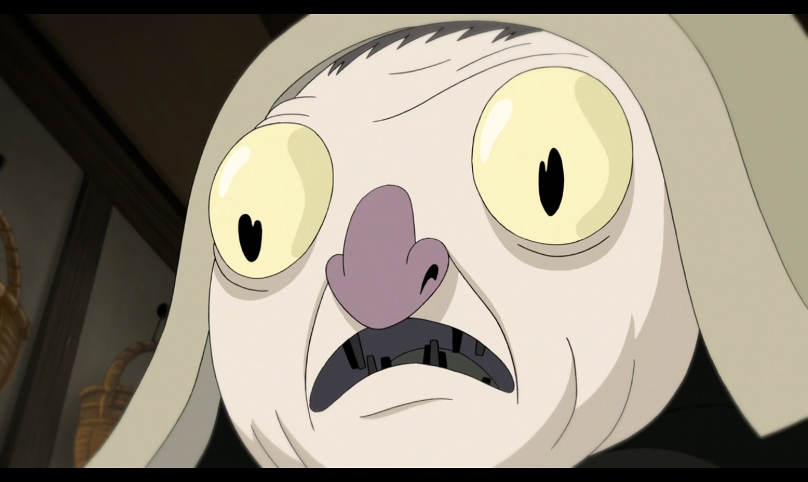
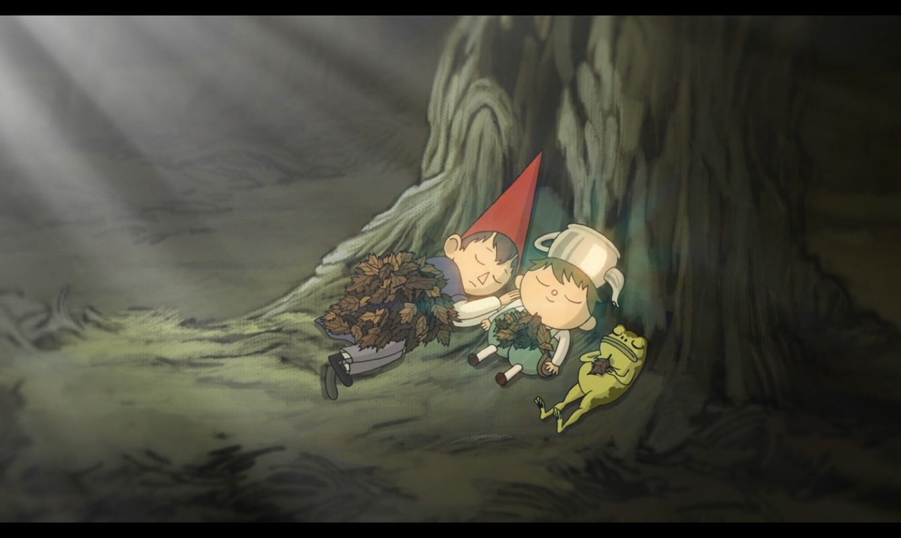
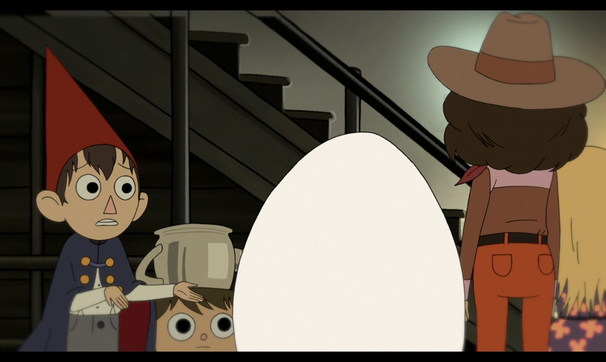
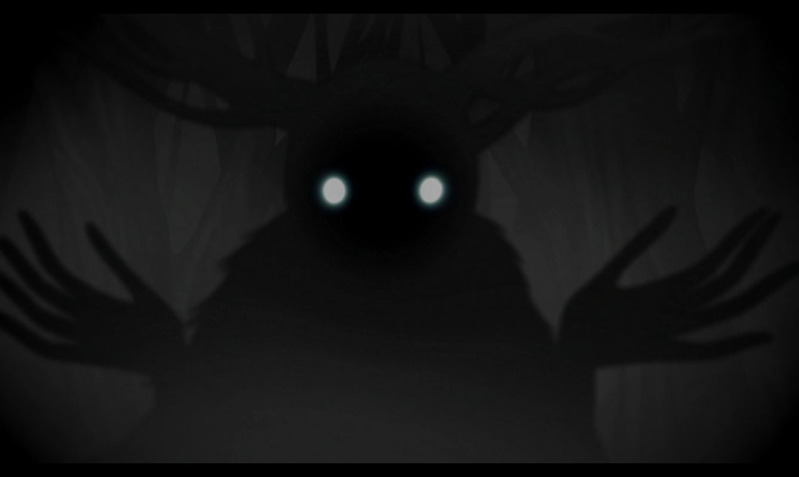

Wirt y Greg se pierden en el bosque y conocen a un leñador que les advierte sobre la Bestia.

Los hermanos llegan a Pottsfield, un pueblo donde se celebra una extraña fiesta de la cosecha.

Wirt, Greg y Beatriz visitan una escuela de animales dirigida por una maestra preocupada.

El grupo entra a una taberna llena de pintorescos personajes para pedir indicaciones.

Llegan a la mansión del excéntrico Quincy Endicott, quien cree que hay un fantasma en su casa.

Wirt y Greg se escabullen en un barco de vapor elegante lleno de ranas bien vestidas.

Wirt conoce a una joven misteriosa llamada Lorna y a su aterradora tía Susurros.

Greg debe tomar el liderazgo cuando Wirt pierde las esperanzas de salir del bosque.

Se revela el origen de Wirt y Greg y cómo fue que terminaron perdidos en lo Desconocido.

El enfrentamiento final contra la Bestia para salvar sus vidas y encontrar el camino a casa.